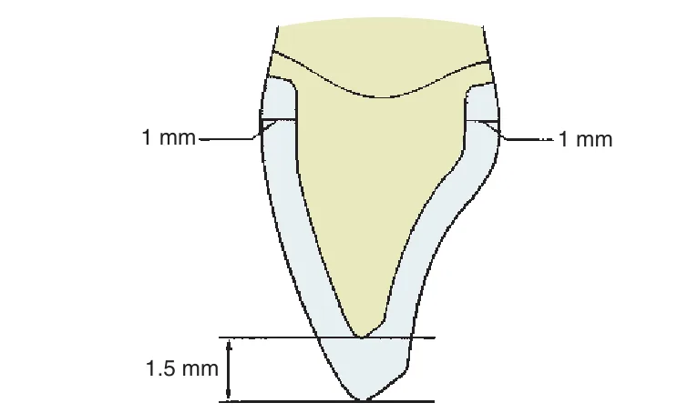

نسخه استخراجشده؛ ترجمه یا تأیید علمی انجام نشده است. وضعیت: captured
کِی کاهش لینگوال لازم میشود: «در بیمارانی که دندان مقابل روی لبهی سرامیکی اکلود میشود یا وقتی سطح لینگوال باید ترمیم شود، کاهش لینگوال اضافی اندیکاسیون دارد.»
و هدفش: «هدف از کاهش لینگوال، ترمیم ساختار متأثر و به دست آوردن فضای پروتزی برای سرامیک است تا ناحیهی تماس اکلوزال کاملاً ترمیم شود. لبهی لینگوال تا جای ممکن انسیزالی نگه داشته میشود تا بافت حفظ گردد. اگر ممکن است، بگذار انسیزور مندیبل روی ساختار دندان اکلود شود.»
و یک جمله که سوءتفاهم رایج را رفع میکند: «با ترمیمهای سرامیکی قدامی باندشده، کاهش لینگوال برای گیر مکانیکی انجام نمیشود.» و اگر واقعاً به دیوارهی لینگوال برای نگه داشتن مکانیکی روکش روی دندان ساختاراً بهخطرافتاده نیاز است، «باید یک روکش سرامیکی زیرکونیایی سنجیده شود».
و اعداد کاهش لینگوال: شیارهای عمق تقریباً ۰٫۸ میلیمتر، و کاهش با ابزار دوار فوتبالیشکل ادامه مییابد «تا کلیرنس در همهی حرکات اکسکورسیو مندیبل ۱ میلیمتر شود، تا فضای کافی برای سرامیک در همهی نواحی باربر تضمین گردد».
و یک محدودیت فنی که تصمیم تراش را عوض میکند: «پس از تکمیل کاهش لینگوال، ضخامت باکولینگوالی در لبهی انسیزال تراشیدهشده را ارزیابی کن. واحدهای میلینگ میتوانند سطح داخلی یک روکش را تا ۰٫۵ تا ۱٫۰ میلیمتر میل کنند. مهم است ابعاد فرز میلینگی که برای ساخت ترمیم به کار میرود را بدانی.»
و پیامد نادیده گرفتنش: «اگر بُعد باکولینگوالی کمتر از پارامتر دستگاه میل باشد، ناحیهی داخلی ترمیم بیش از حد میل خواهد شد، که به فضای سمان بزرگ و نامطلوب میانجامد. ضخامت فیلم سمان بزرگ و ناهموار میتواند حساسیت سرامیک به شکست را افزایش دهد.»
و دو راهحل: «یک راهحل جایگزین، افزایش کاهش لبهی انسیزال برای به دست آوردن بُعد فاسیو-لینگوالی پهنتر است.» یا انتخاب روش هیت-پرس: «با روش هیت-پرس، برخلاف میلینگ، بُعد باکولینگوالی محدودکننده نیست تا زمانی که لبهی انسیزال گرد باشد.»
و گذار به روکش کامل سرامیکی: «تراش روکش کامل روی دندانهای قدامی با آسیب یا نقص سرویکالی، یا اگر روکش موجودی نیاز به تعویض دارد اندیکاسیون دارد.» مراحلش: پس از انتقال مسیر نشست انتخابشده از دیوارهی سرویکالی تراش فاسیال، یک شیار عمق در وسط دیوارهی سینگولوم بگذار؛ سپس تراش لبهی چمفر را از مرکز سینگولوم به سمت پروگزیمال تکرار کن تا چمفر لینگوال به چمفر فاسیال برسد.
و قاعدهی جای لبه و جهت کار: «این لبه باید از کرست لثهی آزاد پیروی کند و نباید بیش از حد زیرلثهای امتداد یابد. توصیه میشود جایگذاری اولیه کمی بالاتر از نقطهی پایان موردنظر باشد» و سپس لبه پالایش و به محل نهایی برده شود، «در جهت پروگزیمال به میان-لینگوال کار کن، چون این خطر تجاوز به اتصال اپیتلیالی را کاهش میدهد».
و یک تفاوت بنیادی میان دو سرامیک: «لیتیومدیسیلیکات وقتی به دندان باند شود قویتر میشود، در حالی که زیرکونیا نمیشود.» و برای روکش سرامیکی هات-پرس، «معمولاً ضخامت حدود ۱٫۰ تا ۱٫۲ میلیمتر برای ساخت ترمیمی از نظر زیبایی خوشایند لازم است».

اعداد کاهش اکلوزال: «کاهش اکلوزال باید ۱٫۵ تا ۲٫۰ میلیمتر کلیرنس برای سرامیک روی همهی کاسپها و شیارها فراهم کند. کلیرنس باید در همهی حرکات اکسکورسیو نیز ارزیابی شود. حداقل ضخامت ۱٫۰ میلیمتر در ناحیهی اکلوزال ترمیم سرامیکی نهایی لازم است.»
و اعداد شیار عمق: «شیارهای عمق را در همهی شیارهای اصلی و قلههای کاسپ بگذار، ابتدا تقریباً ۱٫۳ تا ۱٫۵ میلیمتر عمیق، تا برای از دست رفتن اضافی ساختار حین فینیش جا باشد. شیارها در امتداد سه صفحهی اکلوزال یک دندان خلفی جهتگیری میشوند.»
و یک احتیاط تکنیکی ظریف: «از همان ابزار دواری که برای شیارهای عمق استفاده شد برای کاهش استفاده نکن. اگر این ابزار به کار رود، ممکن است ناخواسته درون شیار بیفتد و عمیقترش کند.» بهجایش، از ابزار دوار الماسی با قطر بزرگتر استفاده کن.
و لحظهی تصمیم بعدی: «وقتی کلیرنس اکلوزال نهایی شد، ضخامت مینای محیطی را ارزیابی کن. مینای ۱٫۵ میلیمتر یا ضخیمتر ساختار کافی برای باند کردن یک آنلهی اکلوزال سرامیکی فراهم میکند. هر چیزی کمتر از ۱٫۵ میلیمتر ضخامت مینا باید گیر مکانیکی مکمل با دیوارههای محوری ۲ میلیمتری داشته باشد.»
و یک واقعیتسنجی صادقانه: «عرض مینای ۱٫۵ میلیمتر یا بیشتر نادر است. معمولاً وقتی دیده میشود که بُعد عمودی اکلوزال افزایش یافته و فضای بینفکی به دست آمده باشد، که اجازه میدهد در بازسازیهای جامع تراش حداقلی انجام شود.»
و کاهش باکال بهعنوان ونیر زیبایی: کلیرنس باید برای ۱ میلیمتر ضخامت پرسلن کافی باشد. «حداقل عمق فینیشلاین میتواند ۰٫۵ میلیمتر برای ترمیم سرامیکی پرسشده یا ۱٫۰ میلیمتر اگر میل شود باشد.» و شیارها: یکی در وسط دیوارهی فاسیال و یکی در هر لاینانگل انتقالی مزیوفاسیال و دیستوفاسیال.
و همان الگوی دوصفحهای که در متالسرامیک دیدی: «کاهش با یک مؤلفهی سرویکالی موازی مسیر نشست پیشنهادی (معمولاً محور طولی دندان) و یک مؤلفهی اکلوزالی موازی کانتور باکال اصلی دندان انجام میشود. عمق این شیارها باید تقریباً ۰٫۳ تا ۰٫۵ میلیمتر در ناحیهی سرویکالی و ۰٫۸ تا ۱٫۰ میلیمتر به سمت اکلوزال باشد — باز هم کمی کمعمق برای جا دادن فینیش.»
و لبهی چمفر اصلاحشده — ویژگیهایش: «هدف نهایی، هدایت بهینهی تنشها در ترمیم پرسلنی کاملشده است. زاویهی کاووسورفیس ۹۰ درجه یا بیشتر بهینه است؛ با این حال هیچ مینای بدون حمایت باقیماندهای نباید نادیده گرفته شود چون بهآسانی لب میپرد.» و فینیشلاین چمفر اصلاحشدهی کاملشده باید «۱ میلیمتر عرض داشته باشد، زاویهی داخلی گرد داشته باشد، صاف باشد، پیوسته باشد، و از هر بینظمی عاری باشد».
و برای لبههای زیرلثهای: «پیش از تراش فینیشلاین چمفر، بافت را با نخ رترکشن کنار بزن.»
و فینیش: «هر لاینانگل تیز باقیمانده را گرد کن تا از عمل گوهای که میتواند باعث شکست شود جلوگیری گردد.»
و در پایان، قاعدهی بار اکلوزال: «به دلیل ضعف نسبی سرامیکهای قابل اچ، بار اکلوزال باید بهطور مطلوب توزیع شود. بهطور کلی این یعنی تماسهای سنتریک قابل قبولاند، ولی نباید هیچ تماس تداخلی جانبی وجود داشته باشد.»
و پیامد این قاعده برای طرح اکلوزال: «گاید قدامی که به دیساکلوژن خلفی میانجامد، خطر لبپریدگی ترمیمهای پرسلنی خلفی را در حرکات فانکشنال یا پارافانکشنال جانبی مندیبل به حداقل میرساند. در مقایسه، ترمیمهای سرامیکی خلفی در گروپ فانکشن ممکن است در خطر بالاتر شکست باشند.»